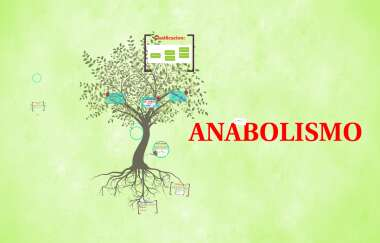
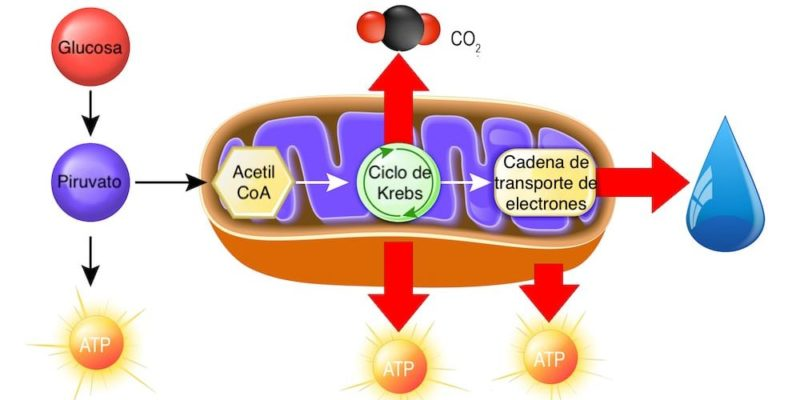
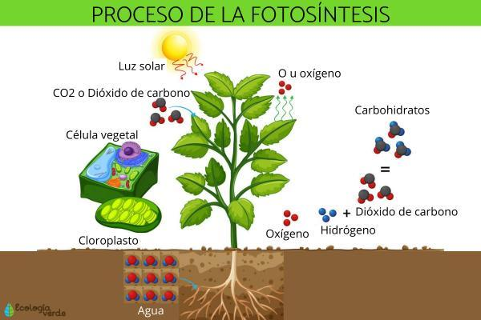

El anabolismo es el conjunto de procesos del metabolismo que tienen por fin la síntesis de componentes celulares a partir de precursores de baja masa molecular, usando energía y poder reductor. El anabolismo es responsable del crecimiento, la reparación y el almacenamiento de energía en los organismos vivos. Algunos ejemplos de procesos anabólicos son la fotosíntesis, la gluconeogénesis y la biosíntesis de proteínas.
El anabolismo se puede dividir en dos tipos: autótrofo y heterótrofo. El anabolismo autótrofo es el que realizan los organismos que pueden sintetizar sus propios nutrientes a partir de sustancias inorgánicas, como el agua y el dióxido de carbono. El anabolismo heterótrofo es el que realizan los organismos que dependen de otros para obtener sus nutrientes, como los animales y los hongos
El anabolismo implica reacciones endergónicas, es decir, que requieren energía y poder reductor para formar enlaces químicos entre las moléculas. La fuente de energía puede ser la luz solar, como en la fotosíntesis, o el ATP, como en la gluconeogénesis. El poder reductor puede ser el NADPH, el NADH o el FADH2, que se obtienen del catabolismo de la glucosa y otras moléculas
El anabolismo es el proceso por el cual la célula invierte la energía que ha ganado para construir nuevas estructuras, como las fibras de los músculos, los componentes celulares y los tejidos corporales

Catabolismo
El catabolismo es el proceso de degradación de nutrientes complejos en sustancias simples para la obtención de energía para el organismo. Es una de las dos fases del metabolismo de los seres vivos, siendo la otra el anabolismo, que es el proceso de síntesis de moléculas complejas a partir de sustancias simples. El catabolismo implica reacciones de oxidación-reducción, en las que se liberan electrones y se produce ATP, la molécula que almacena la energía química. El catabolismo puede ser aeróbico, si requiere oxígeno, o anaeróbico, si no lo requiere. Algunos ejemplos de procesos catabólicos son la glucólisis, el ciclo de Krebs y la cadena de transporte de electrones.
El catabolismo es el proceso por el cual la célula invierte la energía que ha ganado para construir nuevas estructuras, como las fibras de los músculos, los componentes celulares y los tejidos corporales1
El catabolismo se puede dividir en dos tipos: autótrofo y heterótrofo. El catabolismo autótrofo es el que realizan los organismos que pueden sintetizar sus propios nutrientes a partir de sustancias inorgánicas, como el agua y el dióxido de carbono. El catabolismo heterótrofo es el que realizan los organismos que dependen de otros para obtener sus nutrientes, como los animales y los hongos
El catabolismo implica reacciones endergónicas, es decir, que requieren energía y poder reductor para formar enlaces químicos entre las moléculas. La fuente de energía puede ser la luz solar, como en la fotosíntesis, o el ATP, como en la gluconeogénesis. El poder reductor puede ser el NADPH, el NADH o el FADH2, que se obtienen del catabolismo de la glucosa y otras moléculas

Fotosíntesis
La fotosíntesis es el proceso por el cual las plantas, las algas y algunas bacterias transforman la energía de la luz solar en energía química, que usan para sintetizar materia orgánica a partir de materia inorgánica. La fotosíntesis es esencial para la vida en la Tierra, ya que produce oxígeno y nutrientes para los demás seres vivos. Hay dos tipos de fotosíntesis: la oxigénica, que usa agua como donador de electrones y libera oxígeno, y la anoxigénica, que usa otras sustancias como el sulfuro de hidrógeno y no libera oxígeno. La fotosíntesis se realiza en los cloroplastos, que son organelos que contienen clorofila, el pigmento verde que capta la luz. La fotosíntesis consta de dos fases: la fase luminosa, que ocurre en los tilacoides de los cloroplastos y genera ATP y NADPH, y la fase oscura, que ocurre en el estroma de los cloroplastos y usa el ATP y el NADPH para fijar el dióxido de carbono y formar azúcares.
La fotosíntesis se puede dividir en dos fases: la fase luminosa y la fase oscura. La fase luminosa ocurre en los tilacoides de los cloroplastos y consiste en la captación de la energía solar por los pigmentos fotosintéticos, que la transfieren a moléculas de ATP y NADPH. La fase oscura ocurre en el estroma de los cloroplastos y consiste en la fijación del dióxido de carbono por el ciclo de Calvin, que usa el ATP y el NADPH para formar azúcares12
La fotosíntesis es fundamental para el ciclo del carbono y el equilibrio ecológico del planeta, ya que permite la producción de materia orgánica y la liberación de oxígeno. La fotosíntesis oxigénica es la responsable de la mayor parte del oxígeno atmosférico, que es esencial para la respiración de los seres aeróbicos. La fotosíntesis también regula el efecto invernadero, al consumir el dióxido de carbono que contribuye al calentamiento global34
La fotosíntesis es el resultado de una larga evolución biológica, que comenzó hace unos 3500 millones de años con las primeras bacterias fotosintéticas. Estas bacterias realizaban la fotosíntesis anoxigénica, que no producía oxígeno. Posteriormente, aparecieron las cianobacterias, que fueron las primeras en realizar la fotosíntesis oxigénica, que cambió la composición de la atmósfera y permitió la aparición de formas de vida más complejas. Finalmente, las plantas y las algas adquirieron los cloroplastos por endosimbiosis, es decir, por la incorporación de bacterias fotosintéticas en sus células

Respiración
La respiración es el proceso por el cual los seres vivos intercambian gases con el medio externo, generalmente oxígeno y dióxido de carbono. La respiración es esencial para la vida de los organismos aeróbicos, ya que les permite obtener energía para sus funciones vitales. La respiración puede ser de diferentes tipos, según el órgano o el medio que se utilice para realizar el intercambio gaseoso. Algunos ejemplos son la respiración pulmonar, la respiración branquial, la respiración traqueal y la respiración cutánea.
La respiración es una función biológica de los seres vivos que consiste en el intercambio de gases con el medio externo. Por norma general, los seres vivos reciben oxígeno y liberan dióxido de carbono. Si un organismo deja de respirar, muere
La respiración se puede clasificar en diferentes tipos, según el órgano o el medio que se utilice para realizar el intercambio gaseoso. Algunos ejemplos son la respiración pulmonar, la respiración branquial, la respiración traqueal y la respiración cutánea. La respiración pulmonar es la que realizan los vertebrados terrestres, que tienen unos órganos llamados pulmones, donde se produce el intercambio de gases con el aire. La respiración branquial es la que realizan los peces y otros animales acuáticos, que tienen unas estructuras llamadas branquias, donde se produce el intercambio de gases con el agua. La respiración traqueal es la que realizan los insectos y otros artrópodos, que tienen unos tubos llamados tráqueas, que se comunican con el exterior y llevan el aire directamente a las células. La respiración cutánea es la que realizan algunos animales, como las lombrices de tierra y las ranas, que pueden intercambiar gases a través de la piel
La respiración se puede dividir en dos fases: la inspiración y la espiración. La inspiración es el momento en el que se introduce el aire al organismo, mediante la nariz o la boca, y se lleva hasta los pulmones, donde se produce el intercambio de gases. La espiración es el momento en el que se expulsa el aire del organismo, junto con el dióxido de carbono y otros desechos, mediante la contracción de los músculos respiratorios. Entre la inspiración y la espiración hay una breve pausa, que permite que el intercambio de gases sea eficiente